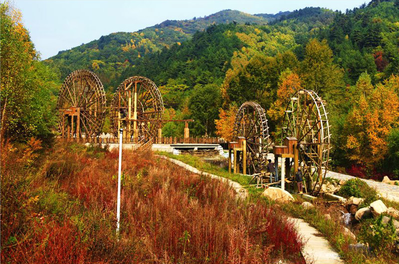
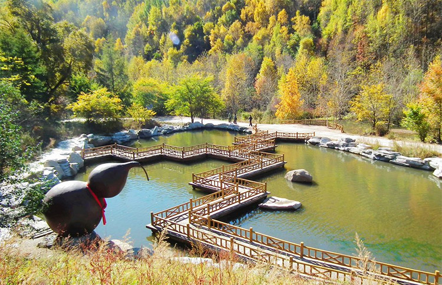
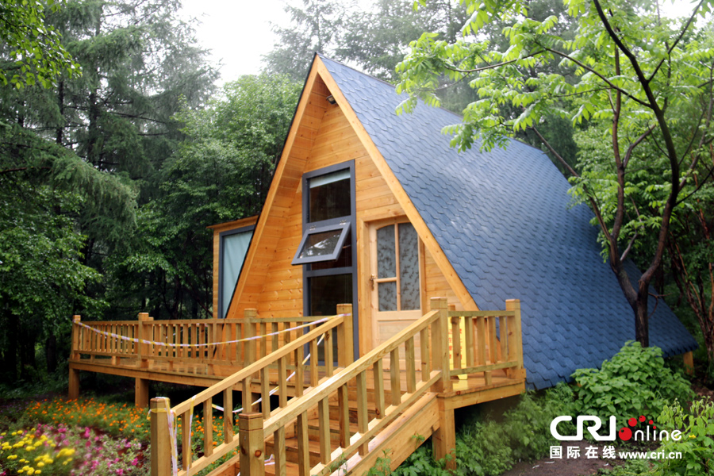
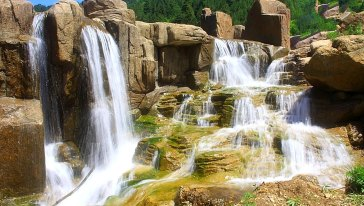
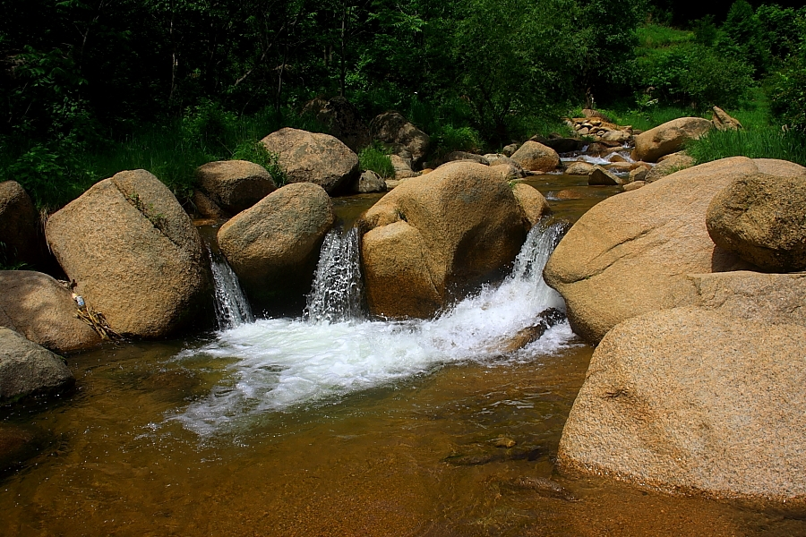

靓丽道须沟
 
道须沟，全称黑里河道须沟旅游景区，位于内蒙古宁城县里河国家自然保护区西南角的实验区内，地处内蒙古宁城县、河北省承德县、隆化县两省三县交界地带，隶属燕山山脉七老图山支脉。 道须沟旅游景区为典型的沟谷地形，海拔处于1050-1700米之间，总体来看，沟谷地形呈现西高东低，南高北低的趋势。其中入口区地势最低，海拔约1100米，地势最高处位于旅游区西侧，海拔约1700米。

这里有我国面积最大的花岗岩石塘林，置身其中，脚下是厚厚的苔藓覆盖的硕大砾石，头顶是遮天蔽日的树冠，身边无数山葡萄、猕猴桃、五味子、萝摩的腾蔓缠绕着山杨和白桦，犹如进入了热带雨林一般，这里简直就是“塞外西双版纳”。各种类型的天然油松林在这里淋漓尽致地表现出来，纯林、混交林相呼应，就连裸露的岩石上，油松也顽强地扎下根系，形成裸岩油松林，仿佛无数棵“迎客松”列队欢迎游客得到来。沟谷中，流水潺潺，瀑布迭起，烟波浩淼，景色大有黄山之奇、庐山之秀。
道须沟里有高等植物953种，其中苔藓植物176种，蕨类植物32种，裸子植物4种，被子植物748种，国家二级保护植物达17种。现已查明哺乳动物33种，其中金钱豹和棕熊是国家二级保护动物。鸟类117种，其中金雕、隼类、雕鹗等是国家一，二级保护鸟类。有昆虫179种，野生真菌165种，可以说道须沟是一个动物植物的王国。
